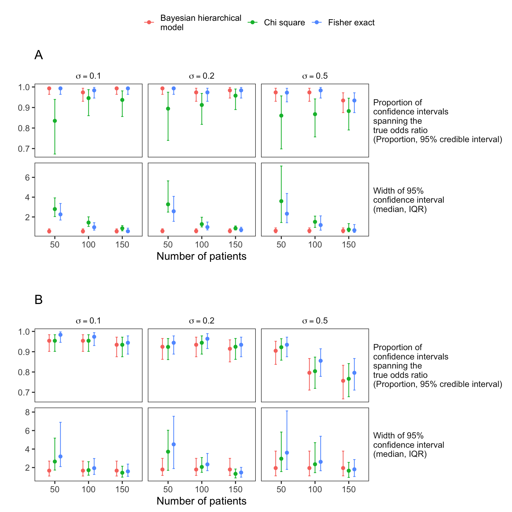

Last updated: 2022-08-19
Checks: 5 2
Knit directory: genie/
This reproducible R Markdown analysis was created with workflowr (version 1.7.0). The Checks tab describes the reproducibility checks that were applied when the results were created. The Past versions tab lists the development history.
The R Markdown is untracked by Git. To know which version of the R
Markdown file created these results, you’ll want to first commit it to
the Git repo. If you’re still working on the analysis, you can ignore
this warning. When you’re finished, you can run
wflow_publish to commit the R Markdown file and build the
HTML.
The global environment had objects present when the code in the R
Markdown file was run. These objects can affect the analysis in your R
Markdown file in unknown ways. For reproduciblity it’s best to always
run the code in an empty environment. Use wflow_publish or
wflow_build to ensure that the code is always run in an
empty environment.
The following objects were defined in the global environment when these results were created:
| Name | Class | Size |
|---|---|---|
| B | gg;ggplot | 84.8 Kb |
| bayes | tbl_df;tbl;data.frame | 3.8 Kb |
| bayesdir | character | 232 bytes |
| C | gg;ggplot | 81.9 Kb |
| Cg | gtable;gTree;grob;gDesc | 1.4 Mb |
| chi2dir | character | 168 bytes |
| combined | tbl_df;tbl;data.frame | 12.7 Kb |
| combined2 | tbl_df;tbl;data.frame | 7.8 Kb |
| D | gg;ggplot | 81.9 Kb |
| datdir | character | 168 bytes |
| Dg | gtable;gTree;grob;gDesc | 1.4 Mb |
| egfr | list | 203.3 Kb |
| fexact.chisq | tbl_df;tbl;data.frame | 6.2 Kb |
| genie | tbl_df;tbl;data.frame | 3.1 Kb |
| gl | list | 3.5 Mb |
| h | numeric | 80 bytes |
| ind | tbl_df;tbl;data.frame | 7.5 Kb |
| ind.proportion | tbl_df;tbl;data.frame | 4.8 Kb |
| ind.widths | tbl_df;tbl;data.frame | 5.5 Kb |
| label_analysis | function | 62.7 Kb |
| label_model | function | 57.6 Kb |
| leg | gtable;gTree;grob;gDesc | 670.9 Kb |
| lower_bound | function | 2.5 Kb |
| m | matrix;array | 248 bytes |
| me | tbl_df;tbl;data.frame | 7.5 Kb |
| me.proportion | tbl_df;tbl;data.frame | 4.8 Kb |
| me.widths | tbl_df;tbl;data.frame | 5.5 Kb |
| posterior_median | function | 2.5 Kb |
| rv | list | 2.9 Kb |
| statistics | character | 336 bytes |
| titles | character | 176 bytes |
| upper_bound | function | 2.5 Kb |
The command set.seed(20220803) was run prior to running
the code in the R Markdown file. Setting a seed ensures that any results
that rely on randomness, e.g. subsampling or permutations, are
reproducible.
Great job! Recording the operating system, R version, and package versions is critical for reproducibility.
Nice! There were no cached chunks for this analysis, so you can be confident that you successfully produced the results during this run.
Great job! Using relative paths to the files within your workflowr project makes it easier to run your code on other machines.
Great! You are using Git for version control. Tracking code development and connecting the code version to the results is critical for reproducibility.
The results in this page were generated with repository version 2d1a126. See the Past versions tab to see a history of the changes made to the R Markdown and HTML files.
Note that you need to be careful to ensure that all relevant files for
the analysis have been committed to Git prior to generating the results
(you can use wflow_publish or
wflow_git_commit). workflowr only checks the R Markdown
file, but you know if there are other scripts or data files that it
depends on. Below is the status of the Git repository when the results
were generated:
Ignored files:
Ignored: .Rhistory
Untracked files:
Untracked: analysis/simulation.Rmd
Untracked: code/bayesian_model_results.Rmd
Untracked: code/chi_square.Rmd
Untracked: output/bayesian_model_results.Rmd/
Untracked: output/chi_square.Rmd/
Untracked: output/simulation.Rmd/
Untracked: todo.org
Note that any generated files, e.g. HTML, png, CSS, etc., are not included in this status report because it is ok for generated content to have uncommitted changes.
There are no past versions. Publish this analysis with
wflow_publish() to start tracking its development.
library(here)
library(tidyverse)
library(ggplot2)
library(kableExtra)
library(grid)
library(gridExtra)chi2dir <- here("output", "chi_square.Rmd")
bayesdir <- here("output", "bayesian_model_results.Rmd")
datdir <- here("output", "simulation.Rmd")
fexact.chisq <- chi2dir %>%
file.path("chisq_summary.rds") %>%
readRDS()
label_model <- function(model){
models <- c("Mutually\nexclusive", "Independent")
dat <- tibble(model=model)
models2 <- dat %>%
mutate(model=case_when(model=="weighted average"~models[1],
model=="independent"~models[2])) %>%
pull(model)
factor(models2, models)
}
label_analysis <- function(analysis){
analyses <- c("Bayesian hierarchical\nmodel", "Chi square",
"Fisher exact")
dat <- tibble(analysis=analysis)
x <- dat %>%
mutate(analysis=case_when(analysis=="bayesian"~analyses[1],
analysis=="chisq"~analyses[2],
TRUE~analysis)) %>%
pull(analysis)
factor(x, analyses)
}
bayes <- bayesdir %>%
file.path("bayesian_model_summary.rds") %>%
readRDS() %>%
mutate(number_bounded=number_simulations) %>%
rename(n_patients=n_patients_simulated)
egfr <- readRDS(file.path(datdir, "mutual_exclusivity.rds"))
genie <- egfr[["nonras"]]The size of the intervals for the fraction of simulations covering the true value also reflects the number of simulations where the interval was bounded. Non-bounded intervals were excluded.
lower_bound <- function(y, n) qbeta(0.025, y+1, n-y+1)
upper_bound <- function(y, n) qbeta(0.975, y+1, n-y+1)
posterior_median <- function(y, n) qbeta(0.5, y+1, n-y+1)
combined <- bind_rows(bayes, fexact.chisq) %>%
mutate(analysis=label_analysis(analysis)) %>%
mutate(p=proportion_correct,
number_correct=as.integer(p*number_bounded),
lower=lower_bound(number_correct, number_bounded),
upper=upper_bound(number_correct, number_bounded),
median=posterior_median(number_correct, number_bounded)) %>%
mutate(x=n_patients+runif(nrow(.), -10, 10)) %>%
mutate(n_patients=factor(n_patients)) %>%
mutate(sd.lambda=recode_factor(sd.lambda,
`0.1`= "sigma==0.1",
`0.2`= "sigma==0.2",
`0.5`= "sigma==0.5"),
model=label_model(model))bayes <- bayesdir %>%
file.path("bayesian_model_results.rds") %>%
readRDS() %>%
group_by(model, sd.lambda) %>%
##summarize(ci_width=sd(ci_width), .groups="drop")
summarize(mean_ci_width=mean(ci_width),
median_ci_width=median(ci_width),
n_patients=unique(n_patients_simulated),
q1=quantile(ci_width, 0.25),
q3=quantile(ci_width, 0.75),
.groups="drop") %>%
mutate(analysis="Bayesian hierarchical\nmodel")
combined2 <- bind_rows(bayes,
select(fexact.chisq, colnames(bayes))) %>%
mutate(sd.lambda=recode_factor(sd.lambda,
`0.1`= "sigma==0.1",
`0.2`= "sigma==0.2",
`0.5`= "sigma==0.5")) %>%
mutate(n_patients=factor(n_patients)) %>%
mutate(analysis=label_analysis(analysis),
model=label_model(model))B <- combined2 %>%
ggplot(aes(n_patients, median_ci_width,
color=analysis)) +
geom_point(size=2, position=position_dodge(width=0.5)) +
geom_errorbar(aes(ymin=q1, ymax=q3),
position=position_dodge(width=0.5),
width=0.2) +
theme_bw(base_size=15) +
facet_grid(model~sd.lambda,
labeller=labeller(sd.lambda=label_parsed)) +
theme(strip.background=element_blank(),
panel.grid=element_blank(),
strip.text.y=element_text(angle=0, hjust=0),
legend.position="bottom") +
xlab("Number of patients") +
ylab("Width of 95%\n confidence interval") +
scale_y_log10() +
guides(color=guide_legend(title=""))
leg <- cowplot::get_legend(B)statistics <- c("Proportion of \nconfidence intervals\nspanning the\ntrue odds ratio\n(Proportion, 95% credible interval)",
"Width of 95%\nconfidence interval\n(median, IQR)")
me.proportion <- filter(combined, model=="Mutually\nexclusive") %>%
select(n_patients, sd.lambda, analysis, median, lower, upper) %>%
mutate(statistic=statistics[1])
me.widths <- filter(combined2, model=="Mutually\nexclusive") %>%
select(n_patients, sd.lambda, analysis,
median_ci_width, q1, q3) %>%
rename(median=median_ci_width,
lower=q1, upper=q3) %>%
mutate(statistic=statistics[2])
me <- bind_rows(me.proportion, me.widths) %>%
mutate(statistic=factor(statistic, statistics))titles <- c("A", "B")
C <- me %>%
ggplot(aes(n_patients, median,
color=analysis)) +
geom_point(size=2, position=position_dodge(width=0.5)) +
geom_errorbar(aes(ymin=lower, ymax=upper),
position=position_dodge(width=0.5),
width=0.2) +
theme_bw(base_size=15) +
facet_grid(statistic~sd.lambda,
labeller=labeller(sd.lambda=label_parsed),
scales="free_y") +
theme(strip.background=element_blank(),
panel.grid=element_blank(),
strip.text.y=element_text(angle=0, hjust=0),
legend.position="bottom") +
xlab("Number of patients") + ylab("") +
guides(color=guide_legend(title="Statistical model")) +
ggtitle(titles[1])ind.proportion <- filter(combined, model=="Independent") %>%
select(n_patients, sd.lambda, analysis, median, lower, upper) %>%
mutate(statistic=statistics[1])
ind.widths <- filter(combined2, model=="Independent") %>%
select(n_patients, sd.lambda, analysis,
median_ci_width, q1, q3) %>%
rename(median=median_ci_width,
lower=q1, upper=q3) %>%
mutate(statistic=statistics[2])
ind <- bind_rows(ind.proportion, ind.widths) %>%
mutate(statistic=factor(statistic, statistics))D <- ind %>%
ggplot(aes(n_patients, median,
color=analysis)) +
geom_point(size=2, position=position_dodge(width=0.5)) +
geom_errorbar(aes(ymin=lower, ymax=upper),
position=position_dodge(width=0.5),
width=0.2) +
theme_bw(base_size=15) +
facet_grid(statistic~sd.lambda,
labeller=labeller(sd.lambda=label_parsed),
scales="free_y") +
theme(strip.background=element_blank(),
panel.grid=element_blank(),
strip.text.y=element_text(angle=0, hjust=0),
legend.position="bottom") +
xlab("Number of patients") + ylab("") +
guides(color=guide_legend(title="Statistical model")) +
ggtitle(titles[2])C <- C+guides(color="none")
D <- D+guides(color="none")
Cg <- ggplotGrob(C)
Dg <- ggplotGrob(D)
gl <- list(leg, Cg, Dg, nullGrob())
m <- matrix(c(1, 2, 4, 3), nrow=4)
h <- c(0.2, 1, 0.1, 1)
grid.arrange(grobs=gl,
layout_matrix=m,
heights=h)
sessionInfo()R version 4.2.1 (2022-06-23)
Platform: x86_64-apple-darwin21.5.0 (64-bit)
Running under: macOS Monterey 12.5.1
Matrix products: default
BLAS: /usr/local/Cellar/openblas/0.3.20/lib/libopenblasp-r0.3.20.dylib
LAPACK: /usr/local/Cellar/r/4.2.1/lib/R/lib/libRlapack.dylib
locale:
[1] en_US.UTF-8/en_US.UTF-8/en_US.UTF-8/C/en_US.UTF-8/en_US.UTF-8
attached base packages:
[1] grid stats graphics grDevices utils datasets methods
[8] base
other attached packages:
[1] gridExtra_2.3 kableExtra_1.3.4 forcats_0.5.1 stringr_1.4.0
[5] dplyr_1.0.9 purrr_0.3.4 readr_2.1.2 tidyr_1.2.0
[9] tibble_3.1.8 ggplot2_3.3.6 tidyverse_1.3.2 here_1.0.1
[13] workflowr_1.7.0
loaded via a namespace (and not attached):
[1] httr_1.4.3 sass_0.4.2 jsonlite_1.8.0
[4] viridisLite_0.4.0 modelr_0.1.8 bslib_0.4.0
[7] assertthat_0.2.1 getPass_0.2-2 highr_0.9
[10] googlesheets4_1.0.1 cellranger_1.1.0 yaml_2.3.5
[13] pillar_1.8.0 backports_1.4.1 glue_1.6.2
[16] digest_0.6.29 promises_1.2.0.1 rvest_1.0.2
[19] colorspace_2.0-3 cowplot_1.1.1 htmltools_0.5.3
[22] httpuv_1.6.5 pkgconfig_2.0.3 broom_1.0.0
[25] haven_2.5.0 scales_1.2.0 webshot_0.5.3
[28] processx_3.7.0 svglite_2.1.0 whisker_0.4
[31] later_1.3.0 tzdb_0.3.0 git2r_0.30.1
[34] googledrive_2.0.0 farver_2.1.1 generics_0.1.3
[37] ellipsis_0.3.2 cachem_1.0.6 withr_2.5.0
[40] cli_3.3.0 magrittr_2.0.3 crayon_1.5.1
[43] readxl_1.4.0 evaluate_0.16 ps_1.7.1
[46] fs_1.5.2 fansi_1.0.3 xml2_1.3.3
[49] tools_4.2.1 hms_1.1.1 gargle_1.2.0
[52] lifecycle_1.0.1 munsell_0.5.0 reprex_2.0.1
[55] callr_3.7.1 compiler_4.2.1 jquerylib_0.1.4
[58] systemfonts_1.0.4 rlang_1.0.4 rstudioapi_0.13
[61] labeling_0.4.2 rmarkdown_2.14 gtable_0.3.0
[64] DBI_1.1.3 R6_2.5.1 lubridate_1.8.0
[67] knitr_1.39 fastmap_1.1.0 utf8_1.2.2
[70] rprojroot_2.0.3 stringi_1.7.8 Rcpp_1.0.9
[73] vctrs_0.4.1 dbplyr_2.2.1 tidyselect_1.1.2
[76] xfun_0.32